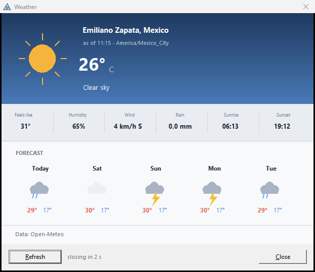
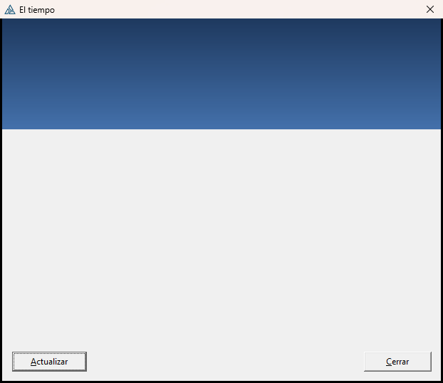
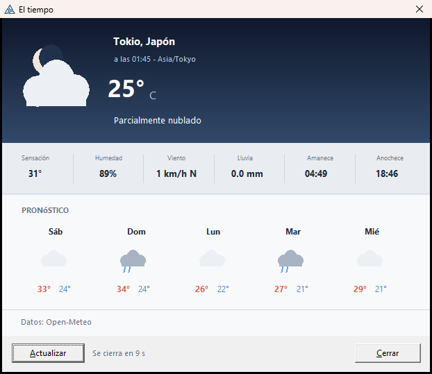
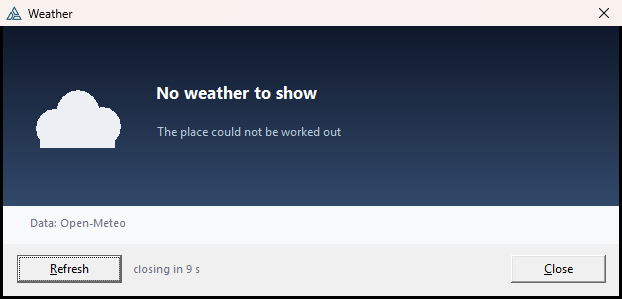
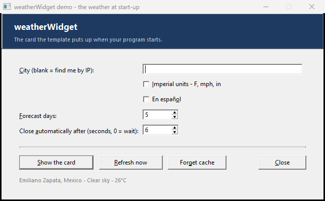

weatherWidget
A weather card at start-up: where the user is, what it is doing outside, what it feels like, and the days ahead. Free data, no API key, and every pixel — sky, sun, moon, cloud, rain, lightning — drawn in Clarion. Nothing to ship but your executable.
Una tarjeta del tiempo al arrancar: dónde está el usuario, qué tiempo hace, qué sensación da y los próximos días. Datos gratuitos, sin clave de API, y cada píxel —cielo, sol, luna, nubes, lluvia, rayos— dibujado en Clarion. No hay nada que distribuir aparte de tu ejecutable.
Open-Meteo · no key · EN / ES · metric or imperial · 7-day forecast · self-closing Open-Meteo · sin clave · EN / ES · métrico o imperial · pronóstico de 7 días · se cierra solaOverviewResumen #
Add one application extension, generate, and your program opens with the weather.
The card shows the place, the temperature now, what it feels like, humidity, wind with its compass point, rain, sunrise and sunset, and up to seven days ahead. It closes itself after a number of seconds you choose, or waits for the user.

Everything on it is drawn with native Clarion graphics — BOX, LINE,
ELLIPSE, POLYGON, SHOW — into a single
IMAGE control. There are no icons, no PNGs and no image library: the sun, the
crescent moon, the clouds, the raindrops and the lightning bolt are all geometry.
| What | Where it comes from |
|---|---|
| The weather and the forecast | api.open-meteo.com — free, no key, no registration |
| The city, from the machine's address | ipwho.is — free, no key |
| The city, from a name you typed | geocoding-api.open-meteo.com — free, no key |
| The download itself | curl.exe, which ships with Windows 10 and 11 |
Añade una extensión de aplicación, genera, y tu programa abre con el tiempo.
La tarjeta muestra el lugar, la temperatura actual, la sensación térmica, la humedad, el viento con su punto cardinal, la lluvia, el amanecer y el atardecer, y hasta siete días por delante. Se cierra sola tras los segundos que elijas, o espera al usuario.
Todo lo que ves está dibujado con gráficos nativos de Clarion —BOX, LINE,
ELLIPSE, POLYGON, SHOW— dentro de un único control
IMAGE. No hay iconos, ni PNG, ni librería de imágenes: el sol, la luna en cuarto, las
nubes, las gotas y el rayo son pura geometría.
| Qué | De dónde viene |
|---|---|
| El tiempo y el pronóstico | api.open-meteo.com — gratis, sin clave, sin registro |
| La ciudad, según la dirección de la máquina | ipwho.is — gratis, sin clave |
| La ciudad, según un nombre que escribiste | geocoding-api.open-meteo.com — gratis, sin clave |
| La descarga en sí | curl.exe, que viene con Windows 10 y 11 |
Install & registerInstalar y registrar #
MyWeatherClass.inc → your Clarion accessory\libsrc\win
MyWeatherClass.clw → your Clarion accessory\libsrc\win
- Copy the three files as above. Both class files must be saved ANSI with CRLF line
endings — a UTF-8 or LF copy gives a misleading
Illegal data typeat the point of use, not in the include. - Register
weatherWidget.tplin the IDE (Tools · Template Registry · Register), or from a command line:ClarionCL -tr <full path>\weatherWidget.tpl. - Restart the IDE. An IDE that is already open never re-reads the registry, so you would keep seeing the old prompts.
- In your application: Global Properties · Extensions · Insert and pick weatherWidget — The weather at start-up.
- Generate and build.
MyWeatherClass.clwpulls itself into the project through itsLINKattribute — there is nothing to add to the project by hand.
curl.exe, which is part of Windows 10 and 11.- Copia los tres archivos como se indica arriba. Los dos archivos de la clase deben guardarse en
ANSI y con saltos de línea CRLF — una copia en UTF-8 o con LF da un engañoso
Illegal data typeen el punto de uso, no en el include. - Registra
weatherWidget.tplen el IDE (Tools · Template Registry · Register), o desde la línea de comandos:ClarionCL -tr <ruta completa>\weatherWidget.tpl. - Reinicia el IDE. Un IDE ya abierto nunca vuelve a leer el registro, así que seguirías viendo los prompts antiguos.
- En tu aplicación: Global Properties · Extensions · Insert y elige weatherWidget — The weather at start-up.
- Genera y compila.
MyWeatherClass.clwse añade sola al proyecto por su atributoLINK— no hay que añadir nada a mano.
curl.exe, que forma parte de Windows 10 y 11.The extensionLa extensión #
There is one template to add and it is an APPLICATION extension — add it once, to the application, not to each procedure. It does four things:
| Embed | What it writes |
|---|---|
%AfterGlobalIncludes | INCLUDE('MyWeatherClass.INC'),ONCE |
%GlobalData | the object — WeatherWidget MyWeatherClass, or an EXTERNAL reference in a child DLL |
%ProgramSetup, priority 7000 | every setting you chose, then WeatherWidget.Ask() |
%BeforeGenerateApplication | registers class category MYWEATHER so the ABC chain writes the pragmas and the export list |
This is what a generated program ends up with:
! %AfterGlobalIncludes INCLUDE('MyWeatherClass.INC'),ONCE ! %GlobalData WeatherWidget MyWeatherClass ! %ProgramSetup WeatherWidget.Locate = 1 WeatherWidget.City = 'Monterrey' WeatherWidget.Units = 1 WeatherWidget.Language = 2 WeatherWidget.Days = 5 WeatherWidget.AutoClose = 10 WeatherWidget.Timeout = 6 WeatherWidget.CacheMinutes = 30 WeatherWidget.Ask() ! the card - the program waits for it
Ask() blocks: your program starts when the card closes. Worst case is two downloads, so
keep Give up after short — six seconds is the default — and leave the cache on. A
machine with no connection at all fails fast and, by default, shows nothing.Turn Show the card when the program starts off and the settings are still written; you then
call WeatherWidget.Ask() yourself, whenever suits.
Hay una sola plantilla que añadir y es una extensión de APLICACIÓN: se añade una vez, a la aplicación, no a cada procedimiento. Hace cuatro cosas:
| Embed | Qué escribe |
|---|---|
%AfterGlobalIncludes | INCLUDE('MyWeatherClass.INC'),ONCE |
%GlobalData | el objeto — WeatherWidget MyWeatherClass, o una referencia EXTERNAL en una DLL hija |
%ProgramSetup, prioridad 7000 | cada ajuste que elegiste, y luego WeatherWidget.Ask() |
%BeforeGenerateApplication | registra la categoría de clase MYWEATHER para que la cadena ABC escriba los pragmas y la lista de exportación |
Esto es lo que acaba teniendo un programa generado:
! %AfterGlobalIncludes INCLUDE('MyWeatherClass.INC'),ONCE ! %GlobalData WeatherWidget MyWeatherClass ! %ProgramSetup WeatherWidget.Locate = 1 WeatherWidget.City = 'Monterrey' WeatherWidget.Units = 1 WeatherWidget.Language = 2 WeatherWidget.Days = 5 WeatherWidget.AutoClose = 10 WeatherWidget.Timeout = 6 WeatherWidget.CacheMinutes = 30 WeatherWidget.Ask() ! la tarjeta - el programa la espera
Ask() bloquea: tu programa arranca cuando la tarjeta se cierra. En el peor caso son dos
descargas, así que deja Rendirse tras en un valor bajo —seis segundos por
defecto— y deja la caché activada. Una máquina sin conexión falla rápido y, por defecto, no muestra
nada.Si desactivas Mostrar la tarjeta al arrancar, los ajustes se escriben igualmente; entonces
llamas tú a WeatherWidget.Ask() cuando te convenga.
Where the place comes fromDe dónde sale el lugar #
| Setting | What happens | Requests |
|---|---|---|
| The machine's internet address the default |
ipwho.is is asked which city this machine appears to be in. A rough answer — the
right city, usually not the right suburb — which is exactly right for weather. |
one, then none for a day |
| A city name | Open-Meteo's geocoder turns Monterrey into coordinates. Add a country if the
name is ambiguous: Cambridge, UK. |
one, then none for a day |
| Latitude and longitude | Nothing is looked up at all. Either box may be a variable instead of a number — it is emitted into the generated code exactly as you typed it — so the coordinates can come from your own data. | none |
For a site that does not allow outbound connections at start-up, use Latitude and longitude — that removes the lookup, but not the weather request itself. To remove all of it, tick Disable this template.
| Ajuste | Qué pasa | Peticiones |
|---|---|---|
| La dirección de internet de la máquina el valor por defecto |
Se le pregunta a ipwho.is en qué ciudad parece estar esta máquina. Una respuesta
aproximada —la ciudad correcta, casi nunca la colonia correcta— que para el tiempo es
justo lo que hace falta. |
una, y ninguna durante un día |
| Un nombre de ciudad | El geocodificador de Open-Meteo convierte Monterrey en coordenadas. Añade el
país si el nombre es ambiguo: Cambridge, UK. |
una, y ninguna durante un día |
| Latitud y longitud | No se consulta nada. Cualquiera de las dos casillas puede ser una variable en vez de un número —se emite en el código generado tal como la escribiste— así que las coordenadas pueden salir de tus propios datos. | ninguna |
Para una instalación que no permite conexiones salientes al arrancar, usa Latitud y longitud —eso elimina la búsqueda del lugar, pero no la petición del tiempo. Para quitarlo todo, marca Desactivar esta plantilla.
From a menu or a buttonDesde un menú o un botón #
The second template in the set is a code template — weatherWidget — Show the weather
now. Drop it into any embed: a menu item's Accepted, a button, a hot key.
| Prompt | Effect |
|---|---|
| Object name | The same object the application extension declared. Leave it as WeatherWidget unless you renamed it there. |
| Get a fresh reading first | Ticked, it always goes to the network — which is what a Refresh menu item should do. Unticked, a reading younger than the cache setting is reused and no request is made. |
It generates one or two lines:
WeatherWidget.Refresh() ! only when "fresh reading" is ticked
WeatherWidget.Ask()
La segunda plantilla del juego es una plantilla de código: weatherWidget — Show the
weather now. Ponla en cualquier embed: el Accepted de un menú, un botón, una tecla
rápida.
| Prompt | Efecto |
|---|---|
| Nombre del objeto | El mismo objeto que declaró la extensión de aplicación. Déjalo en WeatherWidget salvo que allí lo hayas renombrado. |
| Traer una lectura nueva primero | Marcado, siempre va a la red —que es lo que debe hacer un menú Actualizar. Sin marcar, se reutiliza una lectura más joven que el ajuste de caché y no se hace ninguna petición. |
Genera una o dos líneas:
WeatherWidget.Refresh() ! solo si "lectura nueva" está marcado
WeatherWidget.Ask()
Units & languageUnidades e idioma #

Units are asked for at the source, not converted afterwards: Imperial adds
temperature_unit=fahrenheit, wind_speed_unit=mph and
precipitation_unit=inch to the request, so what the card shows is what the service
computed.
| Metric | Imperial | |
|---|---|---|
| Temperature | °C | °F |
| Wind | km/h | mph |
| Rain | mm | in |
Language is English or Spanish and covers every word on the card: the labels, the conditions (Clear sky / Despejado), the short day names, the compass points (WSW / OSO), the buttons and the countdown. It is also passed to the geocoder, which is why the Spanish card above says Monterrey, México and the Tokyo one says Tokio, Japón.
México arrives as two bytes where one belongs. The class folds UTF-8 back to ANSI for
everything in the Latin-1 range; anything above it (Cyrillic, CJK) has no ANSI equivalent and
becomes a question mark rather than mojibake.Las unidades se piden en origen, no se convierten después: Imperial añade
temperature_unit=fahrenheit, wind_speed_unit=mph y
precipitation_unit=inch a la petición, así que lo que muestra la tarjeta es lo que
calculó el servicio.
| Métrico | Imperial | |
|---|---|---|
| Temperatura | °C | °F |
| Viento | km/h | mph |
| Lluvia | mm | in |
El idioma es inglés o español y cubre cada palabra de la tarjeta: las etiquetas, las condiciones (Clear sky / Despejado), los días abreviados, los puntos cardinales (WSW / OSO), los botones y la cuenta atrás. También se le pasa al geocodificador, que es por lo que la tarjeta de arriba dice Monterrey, México y la de Tokio dice Tokio, Japón.
México llega con dos bytes donde va uno. La clase reconvierte UTF-8 a ANSI para todo el
rango Latin-1; lo que queda por encima (cirílico, CJK) no tiene equivalente ANSI y se convierte en
un signo de interrogación en vez de en galimatías.Caching & being offlineCaché y estar sin conexión #
Two settings decide how often your program actually talks to the internet.
| Setting | Default | What it does |
|---|---|---|
| Re-use a reading younger than | 30 minutes | A reading younger than this is taken from the INI and no request is made at all. Restarting the program five times in an hour does not mean five round trips. Set it to 0 to always fetch. |
| Remember the last reading between runs | on | Writes the reading to <yourexe>.INI, section [myWeather].
This is also what makes an offline start-up able to show anything. |
When the fetch fails, the card can behave three ways:
| If the weather cannot be fetched | Result |
|---|---|
| Show nothing at all | No card, no message. A laptop with no connection starts your program exactly as it always did. |
| Show the last reading kept (default) | The card, marked last known reading in place of the timestamp. If there is no cache, no card. |
| Show the card, with the fault on it | Always a card — the reading if there is one, otherwise the headline and the reason. |
Dos ajustes deciden con qué frecuencia tu programa habla de verdad con internet.
| Ajuste | Por defecto | Qué hace |
|---|---|---|
| Reutilizar una lectura más joven que | 30 minutos | Una lectura más joven que esto se toma del INI y no se hace ninguna petición. Reiniciar el programa cinco veces en una hora no son cinco viajes a la red. Ponlo en 0 para consultar siempre. |
| Recordar la última lectura entre ejecuciones | activado | Escribe la lectura en <tuexe>.INI, sección [myWeather].
Es también lo que permite mostrar algo en un arranque sin conexión. |
Cuando la consulta falla, la tarjeta puede comportarse de tres maneras:
| Si no se puede obtener el tiempo | Resultado |
|---|---|
| No mostrar nada | Ni tarjeta ni mensaje. Un portátil sin conexión arranca tu programa igual que siempre. |
| Mostrar la última lectura guardada (por defecto) | La tarjeta, marcada última lectura conocida en lugar de la hora. Si no hay caché, no hay tarjeta. |
| Mostrar la tarjeta, con el fallo escrito | Siempre una tarjeta: la lectura si la hay, y si no el titular y el motivo. |
Privacy & the internetPrivacidad e internet #
- ipwho.is — only when locating by address. It sees the machine's public IP, which is how it answers with a city. Not sent when you use a city name or coordinates.
- geocoding-api.open-meteo.com — only when locating by name. It sees the city name.
- api.open-meteo.com — always. It sees the coordinates, rounded to whatever the lookup returned.
Open-Meteo is free for non-commercial use and asks for attribution — the card carries Data: Open-Meteo at the bottom, and you should leave it there. For commercial volume, see their site for the paid tier; the class only needs its URL changed.
If outbound traffic at start-up is not acceptable at your site: pick Latitude and longitude to remove the lookup, or tick Disable this template to remove all of it. Neither needs any other change to your application.
- ipwho.is — solo al localizar por dirección. Ve la IP pública de la máquina, que es como responde con una ciudad. No se usa si eliges ciudad o coordenadas.
- geocoding-api.open-meteo.com — solo al localizar por nombre. Ve el nombre de la ciudad.
- api.open-meteo.com — siempre. Ve las coordenadas, con la precisión que devolviera la búsqueda.
Open-Meteo es gratuito para uso no comercial y pide atribución: la tarjeta lleva Datos: Open-Meteo abajo, y conviene dejarlo. Para volumen comercial, mira su web y el plan de pago; a la clase solo hay que cambiarle la URL.
Si el tráfico saliente al arrancar no es aceptable en tu instalación: elige Latitud y longitud para quitar la búsqueda del lugar, o marca Desactivar esta plantilla para quitarlo todo. Ninguna de las dos cosas exige otro cambio en tu aplicación.
What is on the cardQué lleva la tarjeta #
Three bands, and the card is only as tall as what you leave on it.
| Band | Shows | Turned off by |
|---|---|---|
| The sky 96 units |
The weather drawn large, the place, the observation time and time zone, the temperature and the conditions in words. A blue gradient by day, navy by night — the service tells us which. | always there |
| The readings 40 units |
Up to six cells: feels like, humidity, wind with its compass point, rain, sunrise, sunset. They divide the width evenly, so five cells are wider than six. | untick all six |
| The days ahead 88 units |
One column per day: short day name (today reads Today), the weather drawn small, and the high and low as a centred pair. | forecast days = 0 |
Tres franjas, y la tarjeta mide solo lo que le dejes dentro.
| Franja | Muestra | Se quita con |
|---|---|---|
| El cielo 96 unidades |
El tiempo dibujado en grande, el lugar, la hora de la lectura y su zona horaria, la temperatura y las condiciones en palabras. Degradado azul de día, azul marino de noche —lo dice el servicio. | siempre está |
| Las lecturas 40 unidades |
Hasta seis celdas: sensación, humedad, viento con su punto cardinal, lluvia, amanecer, atardecer. Se reparten el ancho a partes iguales, así que cinco celdas son más anchas que seis. | desmarcar las seis |
| Los días 88 unidades |
Una columna por día: día abreviado (hoy se lee Hoy), el tiempo dibujado en pequeño, y la máxima y la mínima como pareja centrada. | días de pronóstico = 0 |
The drawn weatherEl tiempo dibujado #

There are no image files. The WMO code the service returns picks one of eight pictures, and each is assembled from primitives:
| Codes | Picture | How it is drawn |
|---|---|---|
| 0 | sun / moon | An ELLIPSE, plus eight LINE rays by day. By night, a disc with a second disc of the sky colour punched out of it, offset up and right — that is the crescent. |
| 1, 2 | sun or moon behind cloud | The orb, smaller and up-left, then the cloud over it. |
| 3 | cloud | Three overlapping ELLIPSE puffs over a flat BOX base. |
| 45, 48 | fog | Cloud, plus three staggered horizontal lines under it. |
| 51–57 | drizzle | A darker cloud and two short slanted strokes. |
| 61–67, 80–82 | rain / showers | The same with three strokes; showers add the sun behind. |
| 71–77, 85, 86 | snow | Small filled discs instead of strokes — snow does not slant. |
| 95–99 | thunderstorm | A six-point POLYGON bolt in amber. |
Glyph() takes the colour behind it as a parameter, and the night sky is a gradient — so
the card asks Sky() for the colour at that row and passes that. Punch the moon
with the wrong colour and the crescent shows up as a grey bite.No hay archivos de imagen. El código WMO que devuelve el servicio elige uno de ocho dibujos, y cada uno se arma con primitivas:
| Códigos | Dibujo | Cómo se dibuja |
|---|---|---|
| 0 | sol / luna | Un ELLIPSE, más ocho rayos LINE de día. De noche, un disco con un segundo disco del color del cielo recortado encima, desplazado arriba y a la derecha: eso es el cuarto. |
| 1, 2 | sol o luna tras la nube | El astro, más pequeño y arriba a la izquierda, y la nube encima. |
| 3 | nube | Tres ELLIPSE superpuestos sobre una base plana BOX. |
| 45, 48 | niebla | Nube y tres líneas horizontales escalonadas debajo. |
| 51–57 | llovizna | Una nube más oscura y dos trazos cortos inclinados. |
| 61–67, 80–82 | lluvia / chubascos | Lo mismo con tres trazos; los chubascos añaden el sol detrás. |
| 71–77, 85, 86 | nieve | Discos pequeños en vez de trazos: la nieve no cae inclinada. |
| 95–99 | tormenta | Un rayo POLYGON de seis puntos en ámbar. |
Glyph() recibe el color que tiene detrás como parámetro, y el cielo nocturno es un
degradado —así que la tarjeta le pregunta a Sky() el color de esa fila y se lo
pasa. Recorta la luna con el color equivocado y el cuarto aparece como un mordisco gris.Closing itselfCerrarse sola #
Close it automatically after is in seconds; 0 means wait for the user. With a countdown running the card writes closing in 8 s beside the Refresh button and takes itself away.
Pressing Refresh stops the countdown for good — the user is clearly reading it — and fetches a new reading, ignoring the cache. Esc and the Close button both close it.
Cerrarla automáticamente tras va en segundos; 0 significa esperar al usuario. Con la cuenta atrás en marcha la tarjeta escribe se cierra en 8 s junto al botón Actualizar y se retira sola.
Pulsar Actualizar detiene la cuenta atrás definitivamente —está claro que alguien la está mirando— y trae una lectura nueva, sin usar la caché. Esc y el botón Cerrar la cierran.
When there is no readingCuando no hay lectura #

The fault card is a headline and a reason, and it is short — the readings strip and the forecast are dropped, so it does not leave an empty frame where a forecast should be.
| Reason on the card | What actually happened |
|---|---|
| No internet connection | curl ran but wrote nothing: no route, DNS failed, a proxy refused, or the timeout expired. |
| curl.exe was not found | CreateProcessA could not start it. Windows 8 and earlier, or a locked-down PATH. |
| The place could not be worked out | The lookup answered, but with no coordinates — an unknown city name, or an IP the service cannot place. |
| No weather to show | The weather request answered with something that has no current section in it. |
All four leave Weather.Ok at 0 and put the text in Weather.Err, in the
chosen language, so your own code can react instead of showing the card.
La tarjeta de fallo es un titular y un motivo, y es baja: se quitan la franja de lecturas y el pronóstico, para no dejar un marco vacío donde debería haber días.
| Motivo en la tarjeta | Qué pasó en realidad |
|---|---|
| Sin conexión a internet | curl se ejecutó pero no escribió nada: sin ruta, DNS caído, un proxy que rechaza, o venció el tiempo límite. |
| No se encontró curl.exe | CreateProcessA no pudo lanzarlo. Windows 8 o anterior, o un PATH restringido. |
| No se pudo determinar el lugar | La búsqueda respondió, pero sin coordenadas: una ciudad desconocida, o una IP que el servicio no sabe situar. |
| Sin datos del tiempo | La petición del tiempo respondió con algo que no tiene sección current. |
Los cuatro dejan Weather.Ok en 0 y el texto en Weather.Err, en el idioma
elegido, para que tu propio código pueda reaccionar en vez de mostrar la tarjeta.
Class referenceReferencia de la clase #
What you set
| Property | Type | Default | Meaning |
|---|---|---|---|
Locate | BYTE | Wx:ByIP | Wx:ByIP / Wx:ByCity / Wx:ByLatLon |
City | CSTRING(65) | '' | Used when Locate = Wx:ByCity |
Lat, Lon | REAL | 0 | Used when Locate = Wx:ByLatLon; also filled in by a lookup |
Units | BYTE | Wx:Metric | Wx:Metric / Wx:Imperial |
Language | BYTE | Wx:English | Wx:English / Wx:Spanish |
Days | BYTE | 5 | Forecast days on the card, 0 to 7 |
Title | CSTRING(65) | '' | Window caption; blank uses the localised name |
AutoClose | LONG | 0 | Seconds before it closes itself; 0 waits |
ShowFeels, ShowHumidity, ShowWind, ShowPrecip, ShowSun | BYTE | 1 | Which cells are in the readings strip |
Timeout | LONG | 6 | Seconds any one download may take |
CacheMinutes | LONG | 30 | Re-use a reading younger than this; 0 always fetches |
OnFail | BYTE | Wx:FailCached | Wx:FailSilent / Wx:FailCached / Wx:FailShow |
Persist | BYTE | 1 | Keep the reading in the INI |
IniFile | CSTRING(261) | '' | Blank means <exename>.INI |
Profile | CSTRING(65) | '' | Suffixes the INI section, for two independent cards |
What you get back
| Property | Type | Meaning |
|---|---|---|
Ok | BYTE | 1 when there is a reading to show |
Stale | BYTE | 1 when it came from the INI, not the network |
Err | CSTRING(129) | Why not, in the chosen language |
Place | CSTRING(97) | 'Monterrey, México' |
Zone | CSTRING(65) | 'America/Monterrey' |
Taken | CSTRING(9) | 'HH:MM', in the place's own time zone |
Temp, Feels | REAL | Degrees, in the chosen units |
Humidity | LONG | Per cent |
Precip | REAL | mm or in |
Wind, WindDir | REAL, LONG | Speed, and the bearing it comes from |
WCode | LONG | The WMO code — feed it to Describe() |
IsDay | BYTE | 1 when the sun is up there now |
Sunrise, Sunset | CSTRING(9) | 'HH:MM', local to the place |
NDays | BYTE | Forecast days actually parsed |
DDate[], DCode[], DHi[], DLo[] | arrays, DIM(7) | One entry per forecast day |
Methods
| Method | Returns | What it does |
|---|---|---|
Ask() | BYTE | The whole job: a reading (fresh, cached or none) and the card. 1 if a card was shown. |
Fetch() | BYTE | Just a reading. Uses the cache when it is young enough. |
Refresh() | BYTE | A reading, ignoring the cache. Always hits the network. |
Draw(win, image) | — | Paint the card into an IMAGE on a window of your own. |
CardH() | LONG | How tall the card comes out, in dialog units. |
Describe(code) | STRING | A WMO code in words, in the chosen language. |
DayName(date) | STRING | Short day name; today reads Today / Hoy. |
Compass(deg) | STRING | 250 → WSW / OSO. |
TempText(v) | STRING | Rounded, with the degree sign. |
UnitTemp(), UnitWind(), UnitRain() | STRING | C/F, km/h/mph, mm/in. |
Txt(id) | STRING | Any label on the card, in the chosen language. |
LoadCache(), SaveCache(), ForgetCache() | BYTE / — | The INI side, if you want to drive it yourself. |
Lo que tú pones
| Propiedad | Tipo | Por defecto | Significado |
|---|---|---|---|
Locate | BYTE | Wx:ByIP | Wx:ByIP / Wx:ByCity / Wx:ByLatLon |
City | CSTRING(65) | '' | Se usa cuando Locate = Wx:ByCity |
Lat, Lon | REAL | 0 | Se usan cuando Locate = Wx:ByLatLon; también las rellena una búsqueda |
Units | BYTE | Wx:Metric | Wx:Metric / Wx:Imperial |
Language | BYTE | Wx:English | Wx:English / Wx:Spanish |
Days | BYTE | 5 | Días de pronóstico en la tarjeta, de 0 a 7 |
Title | CSTRING(65) | '' | Título de la ventana; en blanco usa el nombre traducido |
AutoClose | LONG | 0 | Segundos hasta cerrarse sola; 0 espera |
ShowFeels, ShowHumidity, ShowWind, ShowPrecip, ShowSun | BYTE | 1 | Qué celdas van en la franja de lecturas |
Timeout | LONG | 6 | Segundos que puede durar cada descarga |
CacheMinutes | LONG | 30 | Reutilizar una lectura más joven que esto; 0 consulta siempre |
OnFail | BYTE | Wx:FailCached | Wx:FailSilent / Wx:FailCached / Wx:FailShow |
Persist | BYTE | 1 | Guardar la lectura en el INI |
IniFile | CSTRING(261) | '' | En blanco significa <nombreexe>.INI |
Profile | CSTRING(65) | '' | Sufijo de la sección del INI, para dos tarjetas independientes |
Lo que te devuelve
| Propiedad | Tipo | Significado |
|---|---|---|
Ok | BYTE | 1 cuando hay una lectura que mostrar |
Stale | BYTE | 1 cuando vino del INI, no de la red |
Err | CSTRING(129) | Por qué no, en el idioma elegido |
Place | CSTRING(97) | 'Monterrey, México' |
Zone | CSTRING(65) | 'America/Monterrey' |
Taken | CSTRING(9) | 'HH:MM', en la zona horaria del lugar |
Temp, Feels | REAL | Grados, en las unidades elegidas |
Humidity | LONG | Por ciento |
Precip | REAL | mm o in |
Wind, WindDir | REAL, LONG | Velocidad, y el rumbo del que viene |
WCode | LONG | El código WMO — pásalo a Describe() |
IsDay | BYTE | 1 si allí es de día ahora |
Sunrise, Sunset | CSTRING(9) | 'HH:MM', hora del lugar |
NDays | BYTE | Días de pronóstico realmente leídos |
DDate[], DCode[], DHi[], DLo[] | arreglos, DIM(7) | Una entrada por día de pronóstico |
Métodos
| Método | Devuelve | Qué hace |
|---|---|---|
Ask() | BYTE | El trabajo completo: una lectura (nueva, en caché o ninguna) y la tarjeta. 1 si se mostró tarjeta. |
Fetch() | BYTE | Solo una lectura. Usa la caché si es lo bastante joven. |
Refresh() | BYTE | Una lectura, ignorando la caché. Siempre va a la red. |
Draw(win, image) | — | Pinta la tarjeta en un IMAGE de una ventana tuya. |
CardH() | LONG | Cuánto mide de alto la tarjeta, en unidades de diálogo. |
Describe(code) | STRING | Un código WMO en palabras, en el idioma elegido. |
DayName(date) | STRING | Día abreviado; hoy se lee Today / Hoy. |
Compass(deg) | STRING | 250 → WSW / OSO. |
TempText(v) | STRING | Redondeado, con el signo de grado. |
UnitTemp(), UnitWind(), UnitRain() | STRING | C/F, km/h/mph, mm/in. |
Txt(id) | STRING | Cualquier etiqueta de la tarjeta, en el idioma elegido. |
LoadCache(), SaveCache(), ForgetCache() | BYTE / — | La parte del INI, por si quieres manejarla tú. |
Reading the answerLeer la respuesta #
There is no JSON parser and no dependency. Open-Meteo's answers are flat, machine-written and
predictable — no key appears twice inside the same object, and the only nesting is one level of
named sections — which is small enough to read with INSTRING and a hand-rolled number
scanner.
| Method | What it does |
|---|---|
Sect(tag, *from, *to) | Finds a named section and hands back the character range it spans. |
Num(tag, from, to) | The number under that key, searched only inside that range. |
Str(tag, from, to) | The quoted string. Returns '' when the value is not a string. |
ArrNum / ArrStr(tag, index, from, to) | The nth element of an array, stopping at the closing bracket. |
Skip(pos) | Past any white space. |
current_units sits in front of current in the body and
repeats every key with the unit as its value — an unbounded search for
temperature_2m finds the string "°C". That is why every read is bounded to
its section.2. Open-Meteo answers compact but ipwho.is pretty-prints, so
"city": "Monterrey" never matches a search for "city":". Every read skips
white space after the colon. Getting this wrong is silent — you get an empty place name and
everything else works.No hay analizador JSON ni dependencia alguna. Las respuestas de Open-Meteo son planas, escritas por
una máquina y predecibles —ninguna clave aparece dos veces dentro del mismo objeto, y el único
anidamiento es un nivel de secciones con nombre—, lo bastante simples para leerlas con
INSTRING y un lector de números hecho a mano.
| Método | Qué hace |
|---|---|
Sect(tag, *from, *to) | Encuentra una sección con nombre y devuelve el rango de caracteres que ocupa. |
Num(tag, from, to) | El número de esa clave, buscado solo dentro de ese rango. |
Str(tag, from, to) | La cadena entrecomillada. Devuelve '' si el valor no es una cadena. |
ArrNum / ArrStr(tag, index, from, to) | El elemento n de un arreglo, parando en el corchete de cierre. |
Skip(pos) | Salta los espacios en blanco. |
current_units va antes que current en el cuerpo y
repite cada clave con la unidad como valor: una búsqueda sin límites de
temperature_2m encuentra la cadena "°C". Por eso cada lectura se limita a
su sección.2. Open-Meteo responde compacto pero ipwho.is formatea con espacios, así que
"city": "Monterrey" nunca coincide con una búsqueda de "city":". Cada
lectura salta los espacios tras los dos puntos. Equivocarse aquí es silencioso: te quedas sin nombre
de lugar y todo lo demás funciona.WMO weather codesCódigos WMO #
Every code Open-Meteo can send has a line in Describe(), in both
languages.Cada código que Open-Meteo puede enviar tiene su línea en
Describe(), en los dos idiomas.
| Code | English | Español |
|---|---|---|
| 0 | Clear sky | Despejado |
| 1 | Mainly clear | Poco nuboso |
| 2 | Partly cloudy | Parcialmente nublado |
| 3 | Overcast | Nublado |
| 45 / 48 | Fog / Freezing fog | Niebla / Niebla helada |
| 51 / 53 / 55 | Light drizzle / Drizzle / Heavy drizzle | Llovizna ligera / Llovizna / Llovizna intensa |
| 56 / 57 | Freezing drizzle | Llovizna helada |
| 61 / 63 / 65 | Light rain / Rain / Heavy rain | Lluvia ligera / Lluvia / Lluvia intensa |
| 66 / 67 | Freezing rain | Lluvia helada |
| 71 / 73 / 75 | Light snow / Snow / Heavy snow | Nieve ligera / Nieve / Nieve intensa |
| 77 | Snow grains | Granos de nieve |
| 80 / 81 / 82 | Light showers / Showers / Violent showers | Chubascos ligeros / Chubascos / Chubascos fuertes |
| 85 / 86 | Snow showers / Heavy snow showers | Chubascos de nieve / Nevadas fuertes |
| 95 | Thunderstorm | Tormenta |
| 96 / 99 | Thunderstorm with hail | Tormenta con granizo |
ColoursColores #
All of them are equates at the top of MyWeatherClass.inc. Clarion
holds a colour as 0BBGGRRh, so the hex reads backwards from HTML.
Todos son equates al principio de MyWeatherClass.inc. Clarion guarda
un color como 0BBGGRRh, así que el hexadecimal se lee al revés que en HTML.
| Equate | Clarion | RGB | WhereDónde |
|---|---|---|---|
Wx:DaySky1 | 0603A1FH | 31, 58, 96 | day sky, topcielo de día, arriba |
Wx:DaySky2 | 0B87A4AH | 74, 122, 184 | day sky, bottomcielo de día, abajo |
Wx:NightSky1 | 02C1810H | 16, 24, 44 | night sky, topcielo nocturno, arriba |
Wx:NightSky2 | 06B4A32H | 50, 74, 107 | night sky, bottomcielo nocturno, abajo |
Wx:Paper | 0FBF9F8H | 248, 249, 251 | the card bodycuerpo de la tarjeta |
Wx:Panel | 0F2EDE9H | 233, 237, 242 | readings stripfranja de lecturas |
Wx:Ink | 037291FH | 31, 41, 55 | headingstitulares |
Wx:Muted | 080726BH | 107, 114, 128 | labelsetiquetas |
Wx:Sun | 03CB5F5H | 245, 181, 60 | the sunel sol |
Wx:Moon | 0DCE6F0H | 240, 230, 220 | the moonla luna |
Wx:Water | 0FAA560H | 96, 165, 250 | rainlluvia |
Wx:Bolt | 030C0F0H | 240, 192, 48 | lightningrayo |
Wx:Warm | 04A5AE0H | 224, 90, 74 | the day's highla máxima del día |
Wx:Cool | 0D08A4AH | 74, 138, 208 | the day's lowla mínima del día |
Driving it from codeDesde tu propio código #

The class does not need the template. This is a whole program:
PROGRAM INCLUDE('MyWeatherClass.INC'),ONCE MAP END Weather MyWeatherClass CODE Weather.Locate = Wx:ByCity Weather.City = 'Monterrey' Weather.Language = Wx:Spanish Weather.AutoClose = 8 Weather.Ask()
Or use the reading without ever showing the card — a status bar, a report header, a browse column:
IF Weather.Fetch() ?Status{PROP:Text} = CLIP(Weather.Place) & ' - ' | & CLIP(Weather.Describe(Weather.WCode)) & ' - ' | & CLIP(Weather.TempText(Weather.Temp)) | & CLIP(Weather.UnitTemp()) ELSE ?Status{PROP:Text} = CLIP(Weather.Err) END
Or paint the card into an IMAGE on a window of your own — a dashboard, say — instead of
letting the class own a window:
Weather.Fetch()
Weather.Draw(MyWindow, ?MyImage) ! Weather.CardH() is how tall it needs
LINK('MyWeatherClass.CLW',_myWeatherLinkMode_),DLL(_myWeatherDllMode_)
so an application can decide where its code lives. A generated app gets those two pragmas
written for it. A hand-written .cwproj must state them itself:
<DefineConstants>_myWeatherDllMode_=>0%3b_myWeatherLinkMode_=>1</DefineConstants>Leave them out and
DLL() is not read as 0 — the class links as an import and the
constructor jumps into nothing at start-up: Exception … Access Violation, with a call stack
that is all runtime and no code of yours. The demo in examples\weatherWidget carries the
line, with the explanation, in its project file.La clase no necesita la plantilla. Esto es un programa entero:
PROGRAM INCLUDE('MyWeatherClass.INC'),ONCE MAP END Weather MyWeatherClass CODE Weather.Locate = Wx:ByCity Weather.City = 'Monterrey' Weather.Language = Wx:Spanish Weather.AutoClose = 8 Weather.Ask()
O usa la lectura sin mostrar nunca la tarjeta: una barra de estado, la cabecera de un informe, una columna de un browse:
IF Weather.Fetch() ?Status{PROP:Text} = CLIP(Weather.Place) & ' - ' | & CLIP(Weather.Describe(Weather.WCode)) & ' - ' | & CLIP(Weather.TempText(Weather.Temp)) | & CLIP(Weather.UnitTemp()) ELSE ?Status{PROP:Text} = CLIP(Weather.Err) END
O pinta la tarjeta en un IMAGE de una ventana tuya —un tablero, por ejemplo— en vez de
dejar que la clase tenga su propia ventana:
Weather.Fetch()
Weather.Draw(MiVentana, ?MiImagen) ! Weather.CardH() dice cuánto necesita de alto
LINK('MyWeatherClass.CLW',_myWeatherLinkMode_),DLL(_myWeatherDllMode_)
para que una aplicación pueda decidir dónde vive su código. Una app generada recibe esos dos
pragmas ya escritos. Un .cwproj hecho a mano tiene que ponerlos él:
<DefineConstants>_myWeatherDllMode_=>0%3b_myWeatherLinkMode_=>1</DefineConstants>Si faltan,
DLL() no se lee como 0: la clase enlaza como importación y el
constructor salta a la nada al arrancar —Exception … Access Violation, con una pila de
llamadas que es todo runtime y nada tuyo. La demo de examples\weatherWidget lleva esa
línea, con la explicación, en su archivo de proyecto.Multi-DLLMulti-DLL #
MyWeatherClass.inc carries !ABCIncludeFile(MYWEATHER) on line 1, so the
IDE's class registry files it under its own category — not under ABC. The extension
registers that category at %BeforeGenerateApplication, and from there the shipped ABC
machinery does everything:
| Who | What |
|---|---|
ABPROGRM.TPW | writes #pragma define(_myWeatherDllMode_=>0) and _myWeatherLinkMode_ into the project |
ABBLDEXP.TPW | while building a DLL's .EXP, walks the registry and emits VMT$, TYPE$ and every non-private method, name-mangled for you |
Which is why nothing in the template lists a mangled symbol: add a method to the class and the export list follows on the next generate. The Class tab carries the standard ABC Override box if you need to place it by hand.
!ABCIncludeFile lands in category ABC, and a data
DLL then exports every link-mode class whether the app uses it or not — which breaks the DLL
with … is unresolved for export for any class whose .clw is not compiled in.
MYWEATHER keeps this class out of everyone else's export list.MyWeatherClass.inc lleva !ABCIncludeFile(MYWEATHER) en la línea 1, así que
el registro de clases del IDE la archiva bajo su propia categoría, no bajo ABC. La
extensión registra esa categoría en %BeforeGenerateApplication, y a partir de ahí la
maquinaria ABC que ya viene con Clarion hace todo:
| Quién | Qué |
|---|---|
ABPROGRM.TPW | escribe #pragma define(_myWeatherDllMode_=>0) y _myWeatherLinkMode_ en el proyecto |
ABBLDEXP.TPW | al construir el .EXP de una DLL, recorre el registro y emite VMT$, TYPE$ y cada método no privado, con el nombre ya decorado |
Por eso la plantilla no lista ningún símbolo decorado: añade un método a la clase y la lista de exportación se actualiza en la siguiente generación. La pestaña Class lleva la caja estándar de ABC por si necesitas colocarla a mano.
!ABCIncludeFile pelado cae en la categoría ABC, y entonces
una DLL de datos exporta todas las clases en modo enlace, las use la aplicación o no —lo que
rompe la DLL con … is unresolved for export en cualquier clase cuyo .clw no esté
compilado. MYWEATHER mantiene esta clase fuera de la lista de exportación de los
demás.Clarion notesNotas de Clarion #
Things this class had to solve, written down because they are not obvious and they bite silently.
A dialog unit is a fraction of the current font
It is a quarter of the average character width and an eighth of the character height — of
whatever font the target is set to. So the moment SETFONT changes size, every
coordinate handed to SHOW, BOX or LINE means something
different, and a 26pt heading drawn at y=40 lands three times further down the card
than the 9pt line above it. Measured on this machine with a 400 × 300 canvas:
| Font on the target | GETPOSITION reports the canvas as |
|---|---|
| Segoe UI 9 (the base) | 400 × 300 |
| Segoe UI 20 | 187 × 122 |
| Segoe UI 26 bold | 133 × 96 |
| Segoe UI 8 | 467 × 346 |
| back to Segoe UI 9 | 400 × 300 — exactly |
That table is the fix. Ink() picks the font the next string wants and measures
the canvas under it; Say() scales one base-grid coordinate into that font's grid,
draws, and puts the base font back. Geometry is therefore always drawn on one stable grid, and
Wide() can measure a string in base units for centring.
SHOW takes its colour from the font, not the pen
SETPENCOLOR only reaches LINE, BOX, POLYGON and
ELLIPSE. Text is coloured by SETFONT(0, …) — 0 meaning
"the current target". SETFONT(?ImageFeq, …) does not work.
BOX outlines in whatever pen was left behind
It fills with the colour you pass but outlines with the current pen. The sky gradient sets the pen for every one of its 96 one-unit boxes; inherit it and each band picks up an edge in whatever ran before.
Do not call a parameter pKey
KEYCODES.CLW already defines PKey (the P key, EQUATE(0050h)),
Clarion labels are case-insensitive, and a parameter that shadows it warns Label duplicated,
second used: PKEY on every method that has one. The JSON readers take pTag.
Every @N picture groups with commas
FORMAT(25.6866,@n-9.4) is fine, but a value over a thousand comes back with a comma in
it — and latitude=25,692.35 is not a latitude. Numbers that go into a URL or an INI are
written by plain assignment to a CSTRING, which never groups.
A FILE's NAME() variable has to be global
Declaring a FILE,DRIVER('DOS') inside a method with NAME(loc:File) fails
with Attribute variable must be global unless the variable is STATIC. In the end
the class reads its downloads with CreateFileA / ReadFile instead — not to
dodge that, but so your application is not obliged to carry the DOS driver just to show the
weather.
Cosas que esta clase tuvo que resolver, anotadas porque no son obvias y fallan en silencio.
Una unidad de diálogo es una fracción de la fuente actual
Es un cuarto del ancho medio de carácter y un octavo de su alto —de la fuente que tenga puesta el
destino. Así que en cuanto SETFONT cambia el tamaño, cada coordenada que le pasas a
SHOW, BOX o LINE significa otra cosa, y un titular de 26pt
dibujado en y=40 cae tres veces más abajo que la línea de 9pt de encima. Medido en esta
máquina con un lienzo de 400 × 300:
| Fuente del destino | GETPOSITION informa el lienzo como |
|---|---|
| Segoe UI 9 (la base) | 400 × 300 |
| Segoe UI 20 | 187 × 122 |
| Segoe UI 26 negrita | 133 × 96 |
| Segoe UI 8 | 467 × 346 |
| de vuelta a Segoe UI 9 | 400 × 300 — exacto |
Esa tabla es la solución. Ink() elige la fuente que quiere la próxima cadena y
mide el lienzo con ella; Say() convierte una coordenada de la rejilla base a la rejilla
de esa fuente, dibuja, y devuelve la fuente base. La geometría se dibuja siempre sobre una rejilla
estable, y Wide() puede medir una cadena en unidades base para centrarla.
SHOW toma su color de la fuente, no del lápiz
SETPENCOLOR solo llega a LINE, BOX, POLYGON y
ELLIPSE. El texto se colorea con SETFONT(0, …) —el 0 es "el
destino actual". SETFONT(?ImageFeq, …) no funciona.
BOX perfila con el lápiz que quedara puesto
Rellena con el color que le pasas pero perfila con el lápiz actual. El degradado del cielo pone el lápiz en cada una de sus 96 cajas de una unidad; si lo heredas, cada banda se lleva un borde del color de lo anterior.
No llames pKey a un parámetro
KEYCODES.CLW ya define PKey (la tecla P, EQUATE(0050h)), las
etiquetas de Clarion no distinguen mayúsculas, y un parámetro que la tape avisa Label duplicated,
second used: PKEY en cada método que lo tenga. Los lectores JSON reciben pTag.
Toda imagen @N agrupa con comas
FORMAT(25.6866,@n-9.4) va bien, pero un valor por encima de mil vuelve con una coma
dentro —y latitude=25,692.35 no es una latitud. Los números que van a una URL o a un
INI se escriben por asignación directa a un CSTRING, que nunca agrupa.
La variable NAME() de un FILE tiene que ser global
Declarar un FILE,DRIVER('DOS') dentro de un método con NAME(loc:File) falla
con Attribute variable must be global salvo que la variable sea STATIC. Al final
la clase lee sus descargas con CreateFileA / ReadFile —no por esquivar eso,
sino para que tu aplicación no tenga que cargar con el driver DOS solo para mostrar el tiempo.
TroubleshootingSolución de problemas #
| Symptom | Cause and cure |
|---|---|
| No card at all | Either the fetch failed and If the weather cannot be fetched is Show nothing (the quiet default behaviour for an offline machine), or Disable this template is ticked, or Show the card when the program starts is not. |
| curl.exe was not found | Windows 8 or earlier, or a restricted PATH. Install curl, or point the Download method at another downloader. |
| The city is wrong | Locating by address gives the city your ISP appears to be in, which for a mobile connection can be a long way off. Use a city name or coordinates. |
| Start-up got slow | The fetch is synchronous. Lower Give up after, raise Re-use a reading younger than, and prefer coordinates so no lookup is needed. |
| Always the same reading | The cache is doing its job. Lower Re-use a reading younger than, or call Refresh(), or press the Refresh button on the card. |
Accents come out as ? | Expected above Latin-1 — there is no Windows ANSI character for it. Everything in the Latin-1 range converts exactly. |
| Exception … Access Violation at start-up | A hand-coded project without the two pragma defines — see Driving it from code. A generated application cannot hit this. |
| Illegal data type: MyWeatherClass | The .inc on the redirection path is UTF-8 or LF-only. Save it ANSI with CRLF. |
| The prompts look old after re-registering | An IDE that was already open never re-reads the registry. Restart it. |
| Síntoma | Causa y solución |
|---|---|
| No sale ninguna tarjeta | O falló la consulta y Si no se puede obtener el tiempo está en No mostrar nada (el comportamiento discreto por defecto para una máquina sin conexión), o está marcado Desactivar esta plantilla, o no está marcado Mostrar la tarjeta al arrancar. |
| No se encontró curl.exe | Windows 8 o anterior, o un PATH restringido. Instala curl, o apunta el método Download a otro descargador. |
| La ciudad es incorrecta | Localizar por dirección da la ciudad donde parece estar tu proveedor, que en una conexión móvil puede quedar muy lejos. Usa nombre de ciudad o coordenadas. |
| El arranque se volvió lento | La consulta es síncrona. Baja Rendirse tras, sube Reutilizar una lectura más joven que, y prefiere coordenadas para no necesitar búsqueda. |
| Siempre la misma lectura | La caché está haciendo su trabajo. Baja Reutilizar una lectura más joven que, o llama a Refresh(), o pulsa el botón Actualizar de la tarjeta. |
Los acentos salen como ? | Es lo esperado por encima de Latin-1: no existe ese carácter en ANSI de Windows. Todo el rango Latin-1 se convierte exacto. |
| Exception … Access Violation al arrancar | Un proyecto hecho a mano sin los dos defines de pragma —mira Desde tu propio código. Una aplicación generada no puede caer en esto. |
| Illegal data type: MyWeatherClass | El .inc de la ruta de redirección está en UTF-8 o solo con LF. Guárdalo en ANSI con CRLF. |
| Los prompts se ven antiguos tras registrar | Un IDE que ya estaba abierto nunca relee el registro. Reinícialo. |